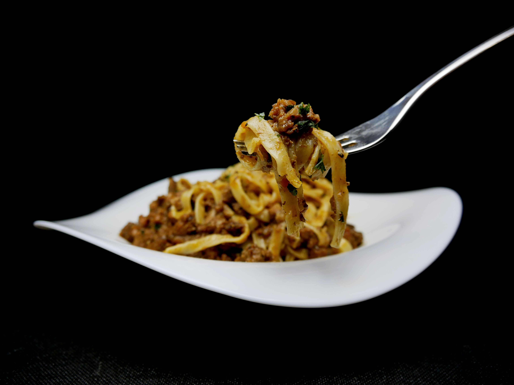

じっくり煮込んだ本格ボロネーゼ
材料（2人分）
- パスタ（タリアテッレなど）: 160g
- 合いびき肉: 200g
- 玉ねぎ: 1/2個
- にんじん: 1/3本
- セロリ: 1/3本
- トマト缶（カット）: 1缶 (400g)
- 赤ワイン: 100ml
- オリーブオイル: 大さじ2
- 塩、こしょう: 少々
作り方
- 玉ねぎ、にんじん、セロリはみじん切りにする。
- 鍋にオリーブオイルを熱し、みじん切りにした野菜を弱火でしんなりするまで炒める。
- 合いびき肉を加えて中火で炒め、色が変わったら赤ワインを加えてアルコールを飛ばす。
- トマト缶を加え、蓋を少しずらして弱火で30分〜1時間ほど煮込む。
- 塩、こしょうで味を調える。
- 茹でたパスタにソースをたっぷりかけて完成！